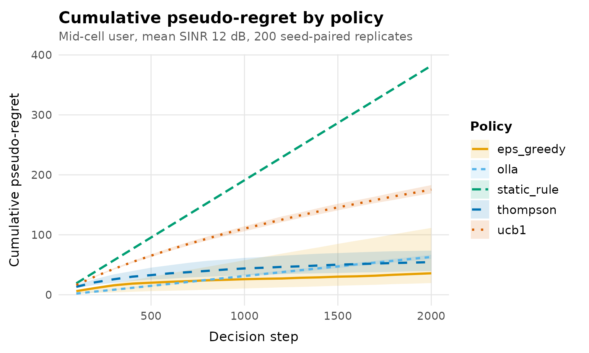
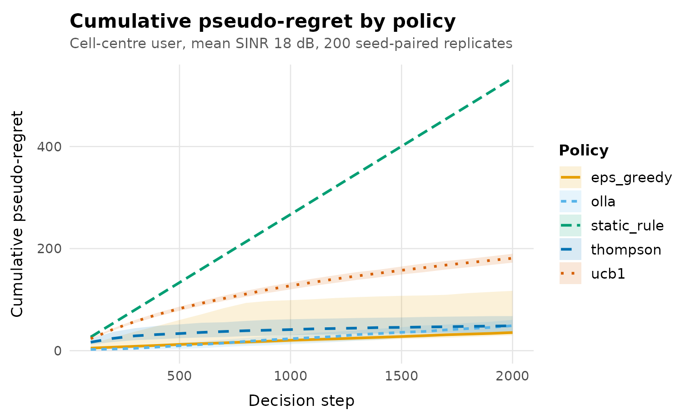
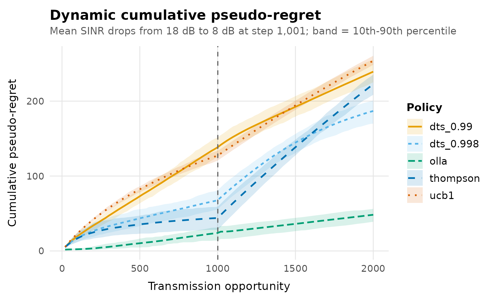

Bandits for RAN optimisation: 5G NR link adaptation
Source:vignettes/articles/nr-link-adaptation.Rmd
nr-link-adaptation.RmdThis article uses banditlab on a radio access network (RAN) problem: choosing the modulation and coding scheme (MCS) for a 5G NR downlink user. It compares bandit policies with two baselines that a network engineer would recognise: a static CQI-to-MCS rule and outer-loop link adaptation (OLLA).
It also demonstrates the parts of banditlab that matter most for
telecoms work: custom environments (bandit_custom() and a
new environment class), custom policies through the three-method
extension API, seed-paired comparisons, and what the package cannot yet
do.
Scope. Everything here is a simulation. The link model is a deliberately simple abstraction (described below) chosen so that the true expected reward of every arm is known and regret can be computed exactly. The results show how the policies behave under this model; they are not field measurements and should not be quoted as expected gains on a live network.
1. The decision problem
At each transmission opportunity the scheduler picks an MCS. A higher MCS carries more bits per resource element but is more likely to fail decoding (a NACK). The useful quantity is the delivered spectral efficiency: the MCS spectral efficiency if the block is decoded, and zero otherwise.
The arms are eight entries of the NR PDSCH MCS table for up to 64QAM (3GPP TS 38.214, Table 5.1.3.1-1). Values are spectral efficiency in bit/s/Hz.
se <- c(MCS0 = 0.2344, MCS4 = 0.6016, MCS8 = 1.1758, MCS12 = 1.6953,
MCS16 = 2.5703, MCS20 = 3.6094, MCS24 = 4.8164, MCS27 = 5.5547)
se_max <- max(se)Link model
- Per-opportunity SINR is Gaussian in dB around the user’s mean SINR, with a standard deviation of 3 dB (a stand-in for fast fading and interference fluctuation).
- Each MCS has a decoding threshold from an attenuated Shannon bound, with .
- The probability of an ACK is a logistic curve in the gap between the realised SINR and the threshold, with slope 1.5 per dB.
- The reward is delivered spectral efficiency normalised to
[0, 1]: .
The expected reward of each arm is computed by numerical integration, so banditlab can report exact pseudo-regret.
eta <- 0.75
slope <- 1.5
sigma_db <- 3
threshold_db <- 10 * log10(2^(se / eta) - 1)
p_ack <- function(sinr_db, mcs) {
1 / (1 + exp(-slope * (sinr_db - threshold_db[[mcs]])))
}
expected_reward <- function(mean_sinr_db) {
vapply(names(se), function(m) {
ack <- integrate(
function(s) p_ack(s, m) * dnorm(s, mean_sinr_db, sigma_db),
mean_sinr_db - 8 * sigma_db, mean_sinr_db + 8 * sigma_db
)$value
ack * se[[m]] / se_max
}, numeric(1))
}
draw_reward <- function(mcs, mean_sinr_db) {
sinr <- rnorm(1, mean_sinr_db, sigma_db)
ack <- runif(1) < p_ack(sinr, mcs)
as.numeric(ack) * se[[mcs]] / se_max
}
round(threshold_db, 1)
#> MCS0 MCS4 MCS8 MCS12 MCS16 MCS20 MCS24 MCS27
#> -6.2 -1.3 2.9 5.8 9.9 14.3 19.3 22.3Three users represent the cell edge, the middle of the cell and the cell centre. Each has a different best MCS:
scenarios <- c(cell_edge = 5, mid_cell = 12, cell_centre = 18)
mu_table <- sapply(scenarios, expected_reward)
round(mu_table, 3)
#> cell_edge mid_cell cell_centre
#> MCS0 0.042 0.042 0.042
#> MCS4 0.105 0.108 0.108
#> MCS8 0.156 0.211 0.212
#> MCS12 0.123 0.297 0.305
#> MCS16 0.030 0.344 0.460
#> MCS20 0.001 0.153 0.567
#> MCS24 0.000 0.011 0.300
#> MCS27 0.000 0.001 0.093
apply(mu_table, 2, function(x) names(which.max(x)))
#> cell_edge mid_cell cell_centre
#> "MCS8" "MCS16" "MCS20"2. Environments
bandit_custom() wraps the sampler. Supplying
expected_rewards turns on regret metrics.
make_env <- function(mean_sinr_db) {
bandit_custom(
sampler = function(arm) draw_reward(arm, mean_sinr_db),
arms = names(se),
expected_rewards = expected_reward(mean_sinr_db)
)
}
envs <- lapply(scenarios, make_env)
envs$cell_edge
#> <custom_environment> 8 arms: MCS0, MCS4, MCS8, MCS12, MCS16, MCS20, MCS24, MCS27
#> expected rewards:
#> MCS0 MCS4 MCS8 MCS12 MCS16 MCS20 MCS24 MCS27
#> 0.0422 0.1055 0.1565 0.1232 0.0301 0.0013 0.0000 0.0000
#> optimal arm(s): MCS83. Baselines written with the extension API
Both baselines are ordinary banditlab policies: a constructor and three S3 methods. Neither required any change to the package.
Static CQI rule
The UE reports a wideband CQI; the rule picks the highest MCS whose threshold is below the reported SINR. CQI reports are often optimistic, so the rule is given a +3 dB reporting bias.
policy_static_rule <- function(reported_sinr_db) {
structure(list(reported_sinr_db = reported_sinr_db),
class = c("static_rule_policy", "bandit_policy"))
}
pick_mcs <- function(sinr_db) {
ok <- names(threshold_db)[threshold_db <= sinr_db]
if (length(ok) == 0) names(threshold_db)[1] else ok[length(ok)]
}
policy_state.static_rule_policy <- function(policy, arms, ...) {
policy$arms <- arms
policy$choice <- pick_mcs(policy$reported_sinr_db)
policy
}
select_arm.static_rule_policy <- function(policy, t, ...) {
list(arm = policy$choice, propensity = 1, reason = "cqi_table")
}
update_state.static_rule_policy <- function(policy, arm, reward, t, ...) {
policy
}Outer-loop link adaptation (OLLA)
OLLA is the standard industry mechanism. It adds an offset to the
reported SINR: down by step_down dB on a NACK, up by
step_down * target / (1 - target) dB on an ACK, which
drives the block error rate (BLER) to target (10% here). A
positive reward means the block was decoded, so the policy can read
ACK/NACK from the reward.
policy_olla <- function(reported_sinr_db, target_bler = 0.1, step_down = 0.5) {
structure(
list(reported_sinr_db = reported_sinr_db, target_bler = target_bler,
step_down = step_down,
step_up = step_down * target_bler / (1 - target_bler)),
class = c("olla_policy", "bandit_policy")
)
}
policy_state.olla_policy <- function(policy, arms, ...) {
policy$arms <- arms
policy$offset <- 0
policy
}
select_arm.olla_policy <- function(policy, t, ...) {
list(arm = pick_mcs(policy$reported_sinr_db + policy$offset),
propensity = 1, reason = "olla")
}
update_state.olla_policy <- function(policy, arm, reward, t, ...) {
policy$offset <- policy$offset +
if (reward > 0) policy$step_up else -policy$step_down
policy
}Thompson sampling for non-binary rewards
policy_thompson() is Beta-Bernoulli and rejects rewards
that are not 0 or 1. Delivered spectral efficiency is continuous, so we
use the standard binarisation trick (Agrawal and Goyal, 2012): on reward
,
update the posterior with a
Bernoulli()
draw. The expected update is unchanged, so the policy targets the same
arm.
policy_thompson_binarised <- function(alpha = 1, beta = 1) {
structure(list(prior_alpha = alpha, prior_beta = beta),
class = c("thompson_binarised_policy", "bandit_policy"))
}
policy_state.thompson_binarised_policy <- function(policy, arms, ...) {
policy$arms <- arms
policy$alpha <- setNames(rep(policy$prior_alpha, length(arms)), arms)
policy$beta <- setNames(rep(policy$prior_beta, length(arms)), arms)
policy
}
select_arm.thompson_binarised_policy <- function(policy, t, ...) {
draws <- rbeta(length(policy$arms), policy$alpha, policy$beta)
list(arm = policy$arms[[which.max(draws)]], propensity = NA_real_,
reason = "posterior_draw")
}
update_state.thompson_binarised_policy <- function(policy, arm, reward, t, ...) {
b <- as.numeric(runif(1) < reward)
policy$alpha[[arm]] <- policy$alpha[[arm]] + b
policy$beta[[arm]] <- policy$beta[[arm]] + 1 - b
policy
}4. Experiment 1: stationary users
Each policy gets 2,000 transmission opportunities, replicated 200 times with seed-paired random number streams. The static rule and OLLA both start from the same +3 dB optimistic CQI.
horizon <- 2000
reps <- 200
cqi_bias_db <- 3
run_scenario <- function(name) {
sinr <- scenarios[[name]]
run_experiment(
envs[[name]],
policies = list(
static_rule = policy_static_rule(sinr + cqi_bias_db),
olla = policy_olla(sinr + cqi_bias_db),
eps_greedy = policy_epsilon_greedy(0.05),
ucb1 = policy_ucb1(),
thompson = policy_thompson_binarised()
),
horizon = horizon,
replications = reps,
seed = 2026,
checkpoints = seq(100, horizon, by = 100)
)
}
results <- lapply(setNames(names(scenarios), names(scenarios)), run_scenario)Results
summary() gives final cumulative pseudo-regret (in units
of normalised spectral efficiency summed over 2,000 opportunities) and
the share of opportunities spent on the best MCS.
summ <- do.call(rbind, lapply(names(results), function(n) {
s <- as.data.frame(summary(results[[n]]))
s$scenario <- n
s
}))
mean_se <- do.call(rbind, lapply(names(results), function(n) {
agg <- aggregate(total_reward ~ policy, data = results[[n]]$summary, FUN = mean)
agg$scenario <- n
agg
}))
tab <- merge(summ, mean_se, by = c("scenario", "policy"))
tab$mean_delivered_se <- tab$total_reward / horizon * se_max
tab$oracle_se <- max_oracle <- vapply(
tab$scenario, function(n) max(mu_table[, n]) * se_max, numeric(1)
)
tab$pct_of_oracle <- 100 * tab$mean_delivered_se / tab$oracle_se
names(tab)
#> [1] "scenario" "policy" "replications"
#> [4] "mean_regret" "median_regret" "regret_q025"
#> [7] "regret_q975" "mean_reward" "mean_optimal_share"
#> [10] "total_reward" "mean_delivered_se" "oracle_se"
#> [13] "pct_of_oracle"
show <- tab[, c("scenario", "policy", "mean_delivered_se", "pct_of_oracle",
grep("regret", names(tab), value = TRUE)[1],
grep("optimal", names(tab), value = TRUE)[1])]
show[order(show$scenario, -show$pct_of_oracle), ] |>
transform(mean_delivered_se = round(mean_delivered_se, 3),
pct_of_oracle = round(pct_of_oracle, 1)) |>
knitr::kable(row.names = FALSE, digits = 3,
caption = "Delivered spectral efficiency (bit/s/Hz) and regret, 200 replicates")| scenario | policy | mean_delivered_se | pct_of_oracle | mean_regret | mean_optimal_share |
|---|---|---|---|---|---|
| cell_centre | olla | 3.012 | 95.7 | 47.911 | 0.783 |
| cell_centre | thompson | 3.002 | 95.4 | 52.588 | 0.875 |
| cell_centre | eps_greedy | 2.987 | 94.9 | 57.716 | 0.840 |
| cell_centre | ucb1 | 2.643 | 84.0 | 180.698 | 0.628 |
| cell_centre | static_rule | 1.664 | 52.9 | 533.905 | 0.000 |
| cell_edge | eps_greedy | 0.812 | 93.5 | 20.791 | 0.834 |
| cell_edge | thompson | 0.739 | 85.0 | 46.791 | 0.659 |
| cell_edge | static_rule | 0.684 | 78.7 | 66.603 | 0.000 |
| cell_edge | olla | 0.678 | 78.1 | 68.790 | 0.324 |
| cell_edge | ucb1 | 0.483 | 55.6 | 138.977 | 0.263 |
| mid_cell | eps_greedy | 1.759 | 92.1 | 55.082 | 0.604 |
| mid_cell | thompson | 1.757 | 92.0 | 56.371 | 0.744 |
| mid_cell | olla | 1.735 | 90.8 | 63.202 | 0.333 |
| mid_cell | ucb1 | 1.423 | 74.5 | 175.415 | 0.422 |
| mid_cell | static_rule | 0.849 | 44.5 | 382.084 | 0.000 |
Cumulative regret over time for the mid-cell user:
autoplot(results$mid_cell, metric = "cumulative_regret") +
labs(subtitle = "Mid-cell user, mean SINR 12 dB, 200 seed-paired replicates")
And for the cell centre, where the optimistic CQI hurts the static rule most:
autoplot(results$cell_centre, metric = "cumulative_regret") +
labs(subtitle = "Cell-centre user, mean SINR 18 dB, 200 seed-paired replicates")
Seed-paired differences against OLLA (positive means more regret than OLLA):
paired <- do.call(rbind, lapply(names(results), function(n) {
cmp <- as.data.frame(compare_policies(results[[n]], baseline = "olla"))
cmp$scenario <- n
cmp
}))
agg <- aggregate(difference ~ scenario + policy, data = paired,
FUN = function(d) c(mean = mean(d),
se = sd(d) / sqrt(length(d))))
agg <- do.call(data.frame, agg)
names(agg)[3:4] <- c("mean_difference", "std_error")
knitr::kable(agg, digits = 2,
caption = "Paired regret difference versus OLLA at step 2,000")| scenario | policy | mean_difference | std_error |
|---|---|---|---|
| cell_centre | eps_greedy | 9.81 | 3.61 |
| cell_edge | eps_greedy | -48.00 | 1.32 |
| mid_cell | eps_greedy | -8.12 | 2.65 |
| cell_centre | static_rule | 485.99 | 0.76 |
| cell_edge | static_rule | -2.19 | 0.20 |
| mid_cell | static_rule | 318.88 | 0.18 |
| cell_centre | thompson | 4.68 | 1.83 |
| cell_edge | thompson | -22.00 | 0.99 |
| mid_cell | thompson | -6.83 | 1.08 |
| cell_centre | ucb1 | 132.79 | 0.87 |
| cell_edge | ucb1 | 70.19 | 0.23 |
| mid_cell | ucb1 | 112.21 | 0.41 |
Reading the results
With seed = 2026 the run above gives the following
picture.
- The static rule never learns. With a +3 dB optimistic CQI it sits on the wrong MCS for the whole horizon and delivers only 44% of the oracle spectral efficiency mid-cell and 53% at the cell centre.
- OLLA removes the CQI bias quickly and is the strongest policy at the cell centre. It converges to the MCS meeting a 10% BLER target, which is not the throughput-optimal MCS at the cell edge, where it delivers 78% of the oracle.
- Thompson sampling optimises delivered spectral efficiency directly. Paired against OLLA it has lower regret at the cell edge (-22.0) and mid-cell (-6.8), and slightly higher regret at the cell centre (+4.7).
- Epsilon-greedy with 5% exploration does well here because the reward model is smooth and low-noise relative to the gaps between neighbouring MCS values. That is a property of this model, not a general result.
-
UCB1 is the weakest learner. Its exploration bonus,
,
is calibrated for rewards spanning
[0, 1], but here the best arm’s mean is at most 0.57 and the gaps between good arms are a few hundredths, so the bonus dominates and UCB1 over-explores. This is a practical warning: reward scaling matters for UCB-type policies.
5. Experiment 2: the radio conditions change
Real radio conditions are not stationary. Here the user’s mean SINR falls from 18 dB to 8 dB halfway through (for example, a neighbour cell’s load rises at busy hour). The best MCS changes from MCS20 to MCS12.
A time-aware environment
banditlab’s sample_reward() generic receives only the
arm, not the time step, so a drifting environment must track time
itself. The class below counts calls and wraps at the horizon so every
replicate sees the same schedule. This is a workaround (see Section
6).
bandit_drifting_sinr <- function(sinr_before, sinr_after, change_at, horizon) {
clock <- new.env()
clock$n <- 0L
structure(
list(arms = names(se), n_arms = length(se), expected_rewards = NULL,
sinr_before = sinr_before, sinr_after = sinr_after,
change_at = change_at, horizon = horizon, clock = clock),
class = c("drifting_sinr_environment", "bandit_environment")
)
}
sample_reward.drifting_sinr_environment <- function(environment, arm, ...) {
clk <- environment$clock
t <- (clk$n %% environment$horizon) + 1L
clk$n <- clk$n + 1L
sinr <- if (t < environment$change_at) environment$sinr_before else environment$sinr_after
draw_reward(arm, sinr)
}Because the expected rewards change over time, the engine cannot
compute regret (it reports NA). We keep full trajectories
and compute dynamic regret against the time-varying best arm
ourselves.
A policy that forgets: discounted Thompson sampling
Stationary Thompson sampling accumulates evidence forever, so after
the change it keeps trusting MCS20 for a long time. Discounted Thompson
sampling (Raj and Kalyani, 2017) decays every arm’s counts by a factor
gamma each step, keeping the effective memory around
1 / (1 - gamma) observations.
policy_discounted_thompson <- function(gamma = 0.99, alpha = 1, beta = 1) {
structure(list(gamma = gamma, prior_alpha = alpha, prior_beta = beta),
class = c("discounted_thompson_policy", "bandit_policy"))
}
policy_state.discounted_thompson_policy <- function(policy, arms, ...) {
policy$arms <- arms
policy$s <- setNames(rep(0, length(arms)), arms)
policy$f <- setNames(rep(0, length(arms)), arms)
policy
}
select_arm.discounted_thompson_policy <- function(policy, t, ...) {
draws <- rbeta(length(policy$arms), policy$s + policy$prior_alpha,
policy$f + policy$prior_beta)
list(arm = policy$arms[[which.max(draws)]], propensity = NA_real_,
reason = "discounted_posterior_draw")
}
update_state.discounted_thompson_policy <- function(policy, arm, reward, t, ...) {
b <- as.numeric(runif(1) < reward)
policy$s <- policy$gamma * policy$s
policy$f <- policy$gamma * policy$f
policy$s[[arm]] <- policy$s[[arm]] + b
policy$f[[arm]] <- policy$f[[arm]] + 1 - b
policy
}OLLA here uses the CQI reported at the start (18 dB + 3 dB bias) and must track the change through its offset alone; a real scheduler would also receive new CQI reports, so this baseline is pessimistic for OLLA.
change_at <- 1001
reps2 <- 100
env_drift <- bandit_drifting_sinr(18, 8, change_at, horizon)
res2 <- run_experiment(
env_drift,
policies = list(
olla = policy_olla(18 + cqi_bias_db),
ucb1 = policy_ucb1(),
thompson = policy_thompson_binarised(),
dts_0.99 = policy_discounted_thompson(gamma = 0.99),
dts_0.998 = policy_discounted_thompson(gamma = 0.998)
),
horizon = horizon,
replications = reps2,
seed = 2026,
keep_trajectories = TRUE
)
mu_before <- expected_reward(18)
mu_after <- expected_reward(8)
tr <- as.data.frame(res2$trajectories)
after <- tr$step >= change_at
tr$mu_arm <- ifelse(after, mu_after[tr$arm], mu_before[tr$arm])
tr$mu_best <- ifelse(after, max(mu_after), max(mu_before))
tr$inst_regret <- tr$mu_best - tr$mu_arm
tr <- tr[order(tr$policy, tr$replicate, tr$step), ]
tr$cum_regret <- ave(tr$inst_regret, tr$policy, tr$replicate, FUN = cumsum)
band <- aggregate(cum_regret ~ policy + step, data = tr[tr$step %% 20 == 0, ],
FUN = function(x) c(mean = mean(x),
lo = unname(quantile(x, 0.1)),
hi = unname(quantile(x, 0.9))))
band <- do.call(data.frame, band)
names(band)[3:5] <- c("mean", "lo", "hi")
ggplot(band, aes(step, mean, colour = policy, fill = policy, linetype = policy)) +
geom_ribbon(aes(ymin = lo, ymax = hi), alpha = 0.15, colour = NA) +
geom_line(linewidth = 0.8) +
geom_vline(xintercept = change_at, linetype = "dashed", colour = "grey40") +
scale_colour_banditlab() + scale_fill_banditlab() +
theme_banditlab() +
labs(title = "Dynamic cumulative pseudo-regret",
subtitle = "Mean SINR drops from 18 dB to 8 dB at step 1,001; band = 10th-90th percentile",
x = "Transmission opportunity", y = "Cumulative pseudo-regret",
colour = "Policy", fill = "Policy", linetype = "Policy")
final <- tr[tr$step == horizon, ]
phase <- aggregate(inst_regret ~ policy + I(step >= change_at),
data = tr, FUN = sum)
names(phase) <- c("policy", "after_change", "regret")
phase$regret <- phase$regret / reps2
wide <- reshape(phase, idvar = "policy", timevar = "after_change",
direction = "wide")
names(wide) <- c("policy", "regret_before_change", "regret_after_change")
best_after <- names(which.max(mu_after))
share_after <- aggregate(I(arm == best_after) ~ policy,
data = tr[tr$step > horizon - 200, ], FUN = mean)
names(share_after)[2] <- "best_mcs_share_last_200"
knitr::kable(merge(wide, share_after), digits = 2,
caption = "Mean dynamic regret per replicate, by phase")| policy | regret_before_change | regret_after_change | best_mcs_share_last_200 |
|---|---|---|---|
| dts_0.99 | 138.38 | 100.96 | 0.27 |
| dts_0.998 | 67.69 | 119.15 | 0.37 |
| olla | 24.07 | 24.24 | 0.22 |
| thompson | 44.00 | 178.55 | 0.11 |
| ucb1 | 127.24 | 126.63 | 0.21 |
Reading the results
-
Stationary Thompson sampling is excellent before
the change (regret
- and the worst policy after it (179): its posterior on MCS20 is built from about 1,000 observations and takes a long time to be overturned.
-
Discounted Thompson sampling trades the two phases
off through
gamma. Withgamma = 0.99(memory of about 100 observations) it adapts after the change (101) but forgets too fast to settle beforehand (138). Withgamma = 0.998(memory of about 500) the balance is 68 before and 119 after.gammais a design parameter that should be matched to how fast the radio conditions actually change. - OLLA is the most robust policy in this experiment (24 before, 24 after). Its offset tracks a level shift within a few dozen NACKs. A bandit that is to replace OLLA on a live network has to beat this, which points to hybrid designs (for example, a bandit choosing OLLA’s BLER target or step size per context) rather than a bandit choosing MCS directly.
6. What this shows about banditlab, and what it needs next
What worked without modifying the package:
- Arbitrary radio-link reward models via
bandit_custom()and new environment classes. - Industry baselines (a CQI table, OLLA) and two literature policies (binarised and discounted Thompson sampling) through the three-method extension API.
- Seed-paired replicated comparison, exact pseudo-regret for stationary problems, and plots that need no styling work.
Gaps that this case study exposed, in priority order for RAN use:
-
Time-aware environments.
sample_reward()should receive the stept, and environments should be able to declare time-varying expected rewards so the engine can report dynamic regret. The clock workaround above is fragile. -
Non-binary Thompson sampling and non-stationary policies
built in. Most RAN rewards (throughput, SINR, energy per bit)
are continuous, and network conditions drift on diurnal and weekly
cycles. Gaussian or binarised Thompson sampling, discounted and
sliding-window variants, and reward scaling checks for UCB1 (which
assumes rewards in
[0, 1]) belong in the package. - Batched and delayed feedback. Cell-level parameters (CIO, A3 offset, time-to-trigger, tilt, reference signal power) are changed per cell and evaluated on counters aggregated over 15-minute or hourly reporting periods. The engine updates after every pull; a batch-update mode would match how network optimisation is actually run.
- Contextual policies. Link adaptation and mobility tuning depend on context (CQI, load, speed, cell type). LinUCB and linear Thompson sampling, which the book’s Part V covers, are the natural next policies.
- Safe exploration. UCB1 and Thompson sampling try every MCS, including ones an engineer knows will fail. Constrained or conservative policies (never perform worse than a baseline by more than a margin) are what make bandits acceptable on a live network.
- Off-policy evaluation from network logs. The trajectory log already records propensities for value-based policies; an inverse propensity or doubly robust estimator would let a new policy be evaluated on historical data before it touches a cell.
References
- 3GPP TS 38.214, NR; Physical layer procedures for data, Table 5.1.3.1-1.
- Agrawal, S. and Goyal, N. (2012). Analysis of Thompson sampling for the multi-armed bandit problem. COLT.
- Raj, V. and Kalyani, S. (2017). Taming non-stationary bandits: a Bayesian approach. arXiv:1707.09727.
- Lattimore, T. and Szepesvári, C. (2020). Bandit Algorithms. Cambridge University Press.